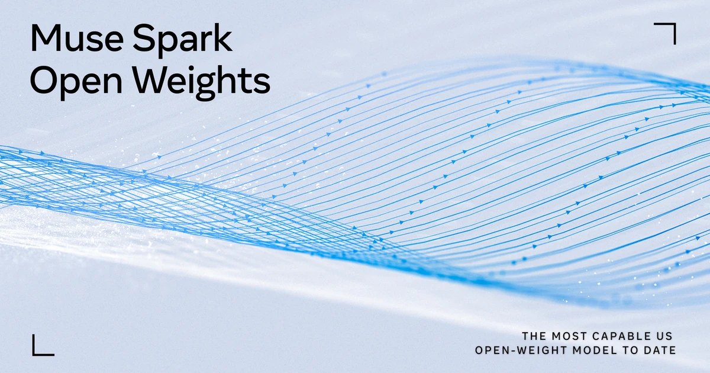

头条 一

图片来源：Meta AI ResearchMeta 15 日放出 Muse Spark Open 权重：816B 总参数、42B 激活、1M 上下文，面向编程与智能体任务。官方称它是目前最强的美国开放权重模型，可用两台 M5 Ultra Mac Studio 在桌面运行，采用有限商用条款的 Muse 许可证。
“最强”是 Meta 自己的说法，完整评测报告还没放出。能不能在家里跑，才是它和前几代开放模型真正拉开的地方。
来源：Meta AI Research
头条 二
Anthropic 向非营利评测机构 METR 的 6 名研究员开放员工级权限：公司笔记本、办公室和接近内部风险团队的工具。METR 将自行发布对其风险与事故的评估，Anthropic 不能否决，只能要求涂黑客户数据等几类信息。
这兑现了 Dario Amodei 9 月提出的“让外部评估者进实验室”。比银行驻场检查员更进一步的是，涂黑本身也可以被公开评论。
来源：TechCrunch
头条 三
图片来源：TechCrunchUniversal Cart 15 日在美国上线，覆盖谷歌搜索和 Gemini 应用。它能跨商家收集商品，降价或补货时提醒，还会结合信用卡权益推荐付款方式、找优惠码。结账走谷歌今年推出的开放标准 UCP，让智能体与零售商对接。
谷歌 5 月在 I/O 上预告过这个功能。购物车是入口，真正的争夺点是 UCP：谁的协议成为智能体下单的默认路径。
来源：TechCrunch
“最强开放模型”是 Meta 的自评，完整评测报告要等后续放出。
METR 能公开评论涂黑是否合理，这比“允许独立评估”更有约束力。
购物车只是入口，UCP 才是谷歌想让智能体默认走的路。